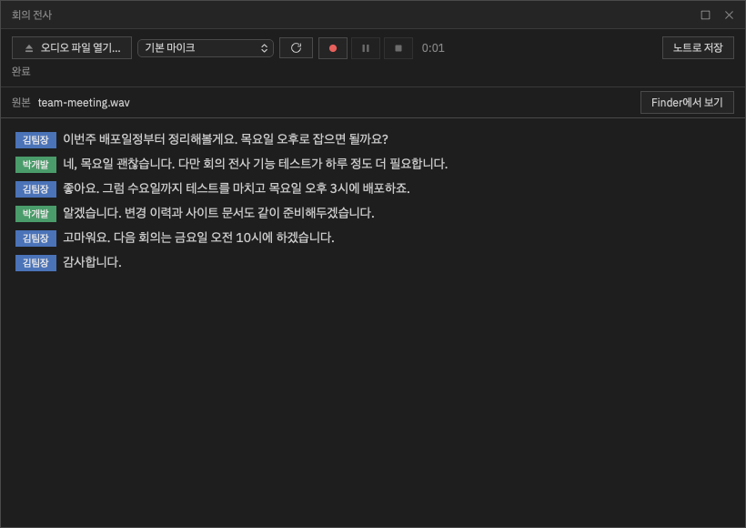
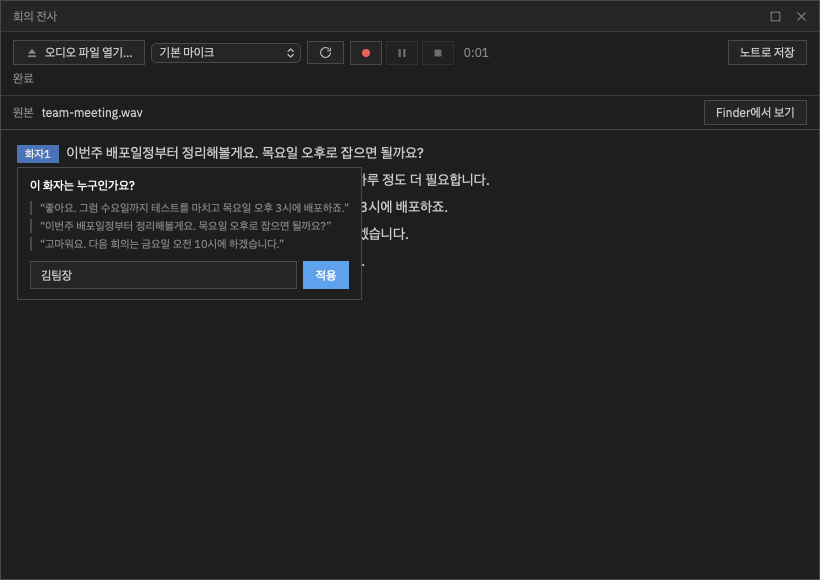
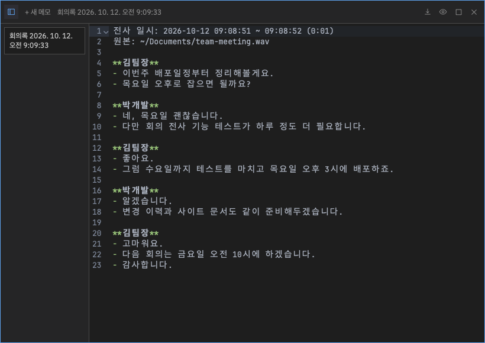

핵심 기능 · 회의 전사
회의 전사
녹음 파일이나 마이크로 들어오는 말을 이 기기 안에서 받아 적습니다. 녹음 중에는 실시간 자막을 보여 주고, 끝나면 전체를 다시 받아 적어 정확도를 높인 뒤 누가 말했는지 나눠 줍니다. 결과는 노트로 저장해 앱 안 AI에게 요약·할 일 정리를 바로 맡길 수 있습니다.
회의 창 열기
타이틀바의 회의 전사(마이크) 아이콘이나 명령 팔레트의 "회의 전사"로 엽니다. 메모 창처럼 떠 있는 창이라 드래그로 옮기고 가장자리로 크기를 바꾸며 최대화할 수 있습니다.
- 창을 닫아도 전사는 계속됩니다. 진행 중이면 마이크 아이콘에 빨간 점이 붙고, 다시 열면 그대로 이어서 보입니다.
- 메모 창과 함께 띄워 두면 클릭하거나 키보드로 고른 창이 앞으로 나옵니다.
처음 쓸 때 — 음성 모델 받기
음성 인식은 모두 이 기기 안에서 하며 소리가 외부로 나가지 않습니다. 그래서 처음 한 번 음성 모델을 내려받아야 합니다 — 창에 뜨는 모델 다운로드 버튼을 누르면 됩니다(받는 동안 진행률 표시, 받은 파일은 크기·체크섬으로 검사).
음성 인식은 현재 한국어 전용입니다.
| 플랫폼 | 처음 받는 크기 | 특징 |
|---|---|---|
| macOS (Apple Silicon) | 약 880MB | GPU(Metal)로 큰 모델(whisper large-v3-turbo)을 써서 받아쓰기 품질이 가장 높습니다. macOS 13.3 이상 |
| Windows (x64) | 약 1.75GB | CPU로 동작합니다. 실시간 자막은 Nemotron 3.5, 정지 후 교정은 whisper 모델(정확도 향상 모델 포함) |
Windows에서 이전 버전 때 모델을 받아 두었다면 회의는 그대로 시작됩니다. 창 상태줄에 "정확도 향상 모델 받기(약 1.26GB)" 링크가 보이면 눌러 추가 모델을 받으세요 — 실시간 자막과 정지 후 교정 정확도가 좋아집니다.
녹음 파일 받아 적기
오디오 파일 열기…로 녹음 파일을 고릅니다. wav · mp3 · m4a · caf · flac 등을 읽고, iPhone 음성 메모(m4a)도 그대로 열립니다. 처음부터 정확도가 높은 모델로 받아 적고, 끝나면 화자를 나눕니다.

마이크로 받아 적기
-
마이크 고르고 녹음 시작
마이크 목록에서 입력 장치를 고르고(기본 마이크 · 새로 꽂은 장치는 새로고침) 마이크 녹음 시작을 누릅니다. 녹음은 바로 시작되고, 자막 엔진이 준비되는 몇 초 동안은 "● 녹음 중 — 자막 준비 중…"으로 표시됩니다(그사이 소리도 빠짐없이 처리됩니다).
-
녹음기처럼 조작
녹음 · 일시정지/재개 · 정지 버튼과 경과 시간으로 조작합니다. 일시정지한 동안의 소리는 자막에도 녹음 파일에도 들어가지 않습니다.
-
정지하면 전체를 다시 받아 적기
정지하면 "확정 처리 중…"이 뜨고 녹음 전체를 더 정확한 모델로 다시 받아 적어 녹음 중 자막을 바꿉니다. 그다음 화자를 확정합니다. 녹음 중 자막이 듬성듬성했어도 이 단계가 회의록을 채웁니다.
마이크 녹음 원본은 wav 파일로 저장되고, 창의 원본 줄에서 Finder/탐색기로 바로 열 수 있습니다.
화자 구분 · 이름 바꾸기
전사가 끝나면 화자를 자동으로 나눕니다(최대 8명, 녹음 중에는 추정값). 줄 앞의 화자 칩(화자1, 화자2…)을 누르면 "이 화자는 누구인가요?"가 뜨고, 이름을 넣고 적용하면 그 사람의 모든 줄이 한 번에 바뀝니다. 녹음 중에 붙인 이름은 끝난 뒤 화자를 확정할 때도 이어집니다.

회의록을 노트로 저장
노트로 저장을 누르면 회의록이 노트 패널에 텍스트 메모로 저장되고 패널이 열립니다(자동 저장은 하지 않습니다). 저장한 뒤 화자 이름을 바꾸면 그 노트도 함께 고쳐집니다.

화자가 바뀔 때 이름 한 줄, 문장마다 한 줄씩 정리됩니다. 마이크 녹음은 일시정지를 뺀 녹음 시간이 괄호에 들어갑니다. 저장한 뒤 앱 안 AI에게 "이 회의 요약해서 할 일 만들어 줘"처럼 맡기면 할 일 보드까지 이어집니다.
잘 안 될 때
- "마이크에서 소리가 들어오지 않습니다" — 운영체제 개인정보 설정에서 Orch term의 마이크 권한과 입력 장치를 확인하세요(macOS: 시스템 설정 › 개인정보 보호 및 보안 › 마이크).
- 녹음 중 자막이 거의 안 나오고 정지 후에 한꺼번에 나온다 — 입력 소리가 너무 작거나(마이크와 멀거나 입력 음량이 낮음) 스피커폰처럼 잡음 제거가 강한 장치일 때 생깁니다. 정지 후 전체 재전사가 회의록을 채우지만, 마이크를 가까이 두거나 입력 음량을 올리면 녹음 중 자막도 좋아집니다.
- 회의 중 앱을 끄면 마이크 녹음 wav까지만 저장되고 화자 확정 등 후처리는 건너뜁니다. 회의록은 노트로 저장한 뒤 끄세요.